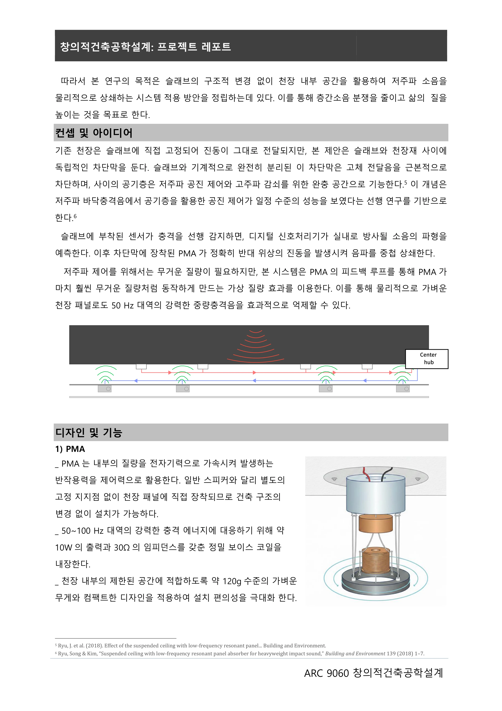

ACTIVE CONTROL OF FLOOR IMPACT SOUND
공기층을 제어하는 바닥충격음 저감 구상
슬래브의 진동을 감지하고 분리된 패널의 움직임을 제어해, 공기층으로 전달되는 저주파 충격음을 줄이는 시스템을 구상했습니다.
- YEAR / SEMESTER
- 3학년 2학기
- COURSE
- 창의적건축공학설계
- CONTRIBUTION
- 박요한 · 임유열 공동 과제
- SITE / SUBJECT
- 슬래브와 천장 사이 공기층

THE IDEA
생각의 출발점
무거운 충격에 의한 저주파 소음은 수동적인 재료 보강만으로 다루기 어려운 경우가 있습니다. 슬래브 센서와 기계적으로 분리된 제어 패널, 관성형 액추에이터를 조합해 능동적으로 대응하는 가능성을 탐구했습니다.
- 01
전달 경로에서 제어 지점 찾기
50–100 Hz의 저주파 충격음을 주요 대상으로 두고, 슬래브와 천장 사이 공기층을 제어하는 개념을 정리했습니다.
- 02
센서와 구동부를 연결
기준 센서가 진동을 감지하고 DSP가 신호를 처리하면, 액추에이터가 패널을 구동하도록 구상했습니다. 오차 센서와 중앙 허브를 통해 여러 구역을 제어하는 구조를 제안했습니다.
- 03
실현을 위한 과제
센서·구동부 배치, 신호 지연, 공간별 편차와 비용을 함께 검토해야 합니다. 실제 시제품의 저감량과 안정성을 확인하는 실험이 후속 단계입니다.
PROCESS & OUTCOME
과정과 결과
사진을 누르면 크게 볼 수 있습니다.